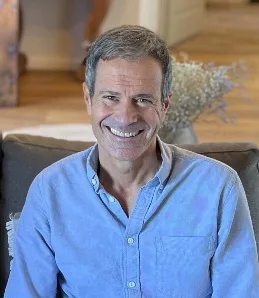

Coming Home.
The Journey of the Ego
A space for inner exploration and practice for those who feel the call to go deeper into themselves and return to their true Self.
Am I really this? What makes up what I believe about myself? My body, my name, my tastes, my emotions, my thoughts, my memories…
Perhaps you come here after years of practising yoga or meditation. Perhaps you have explored paths such as Advaita, A Course in Miracles, plant medicine processes, personal development therapies or other ways of inner searching. Or perhaps you simply feel the time has come to stop, look within and understand more truly who you are. Whatever your path, this space is open to you.
Integrating Advaita, the philosophy and practice of Yoga, and principles also found in paths such as A Course in Miracles, we will walk simply and deeply through the process of your inner recognition. As well as your personal process, the group will be an essential part of the journey: a space for meeting, sharing and conscious challenge.
You don't need to share the same philosophy, language or tradition. All you need is a sincere willingness to question, observe and open up to a more direct and deeper experience of yourself. We offer the space, the guidance and the tools. The discovery will always be yours.
Six stages to come home
Feeling the call to return home
Recognising that inner restlessness or deep urge to know ourselves.
Retracing our own steps
Observing and questioning everything we believe we are, but perhaps are not.
Identifying the ego and dissolving false identities
Understanding how the ego forms, how it operates and how it shapes our perception.
Recognising ourselves
Making room to discover directly our deepest essence, what remains beyond any personal story.
Dwelling in the Self
Learning to live from a more authentic, clear and peaceful presence, in everyday life too.
Settling into the truth of who we are
Staying more and more in that inner truth, so that more conscious and aligned choices arise from it.
So that understanding becomes experience
- Times for explaining and passing on teachings.
- Times for questions, dialogue and conscious challenge.
- Guided personal reflection and observation.
- Breathwork, emotional movement and meditation practices to integrate, ground, regulate and release.
- Group support throughout the process.
- Support material and guided practices between meetings.
Three months, live
Live online meetings on Zoom twice a month, from 6:30 to 8:30 pm (Spain time). You will also have access to an online platform with the recordings of the meetings and extra materials.
You will need: a good internet connection, a camera and a notebook for notes and personal reflection.
Next edition: from January 2027. Write to us and we'll let you know when registration and the free introductory session open. [Pending: exact dates of the January 2027 edition]
Course facilitators

Miquel Canut
Therapist and coach with more than 18 years of experience. Trained in the USA as a Spiritual Coach and Life Coach, specialising in NLP and A Course in Miracles.

Melania Di Vara
Yoga, Meditation and Ayurveda teacher trainer with more than 10 years of experience, trained in traditional schools in India.
What's included
- Access to all the course content.
- Support material and recordings of the sessions.
- Live 2-hour group sessions (2 meetings a month).
- Access to a group chat for questions, guidance and support during the process.
You can pay in a single instalment or in three equal monthly payments.
Before the course begins we offer a free, open online introductory session to share the vision of the journey, answer questions and let you feel whether this space resonates with you.
Registration: write to us and we'll send you all the details. [Pending: confirm the price of the January 2027 edition]
I'd like more information